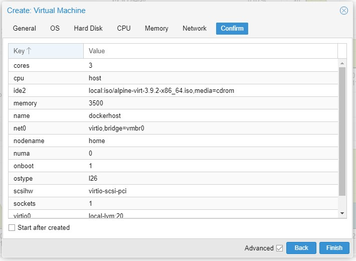

Setup docker plattform using alpine
Downlad and install alpine
download alpine, the virtual version. Upload it to your favorite VM, I am using proxmox.
VM should have properties something like this:

Run the VM. Login as root and run setup-alpine
Add docker
- Add to the file
/etc/apk/repositories,http://uk.alpinelinux.org/alpine/latest-stable/community apk updateapk add dockerrc-update add docker bootservice docker start
Add docker-compose
$ wget https://github.com/docker/compose/releases/download/1.24.0/docker-compose-Linux-x86_64
$ mv ./docker-compose-Linux-x86_64 ./docker-compose
$ cp ./docker-compose /usr/local/bin
$ chmod +x /usr/local/bin/docker-compose